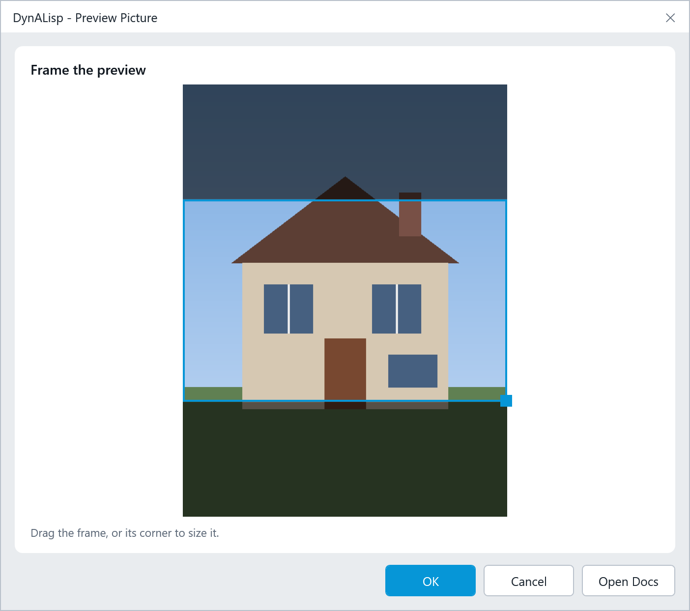

Preview Picture
| Opened by | Choose preview picture... of a drawing right-clicked on the Start page, when the picture chosen is not of the shape of the frames of the page |
| Requires | AutoCAD 2025 or later for Windows |
| Licence | GNU General Public License v3 |
Program Description
Every picture of a drawing on the Start page fills a frame of the same shape, 16 wide by 10 high. A picture of another shape (a photo taken upright, a square logo) is shown whole in this window with a frame over it: what is in the frame becomes the picture of the drawing.
How To Use
- On the Start page, right-click a recent drawing or a pinned card and choose Choose preview picture..., then pick an image.
- Drag the frame onto the part to keep. Drag its corner, or turn the mouse wheel, to make it larger or smaller; click outside it to bring it there.
- Click OK.
Preview Picture Window

- The frame always keeps its shape and stays on the picture; it opens as large as the picture lets it, in its middle. A photo is shown upright, as its camera took it.
- OK keeps the part framed as the picture of the drawing (copied: the image itself can be moved or deleted afterwards). Cancel keeps the picture the drawing had, Open Docs opens this page.